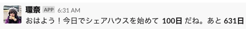

100 days
Posted on Mon, 20 May 2019 in diary
100 days
As Kanna, who shares our schedule every morning at our house slack says, 100 days have passed since we started sharing house today.

I think it is a good opportunity, so look back on the things so far.
Merits
Time
I think we can use time very efficiently. This is of course our house is close to the university, but because we are stimulating each other. I am always in an environment with competitors, so I can do my best so as not to lose them.
I felt that knowing people was logarithmic. In other words, the more you know, the less you get to know, and finally, the amount will converge to nearly zero.
Of course, I am not convinced that at that time, I know all of that person.
However, the speed of housemates getting new skills is faster than that of I know them. That's why I am exciting to live with them.
This environment was what I have long wanted for, so I'm very happy now and very proud of my criteria I used to decide who to live with.
Friendship
Thanks to housemates, from 100 days before, my friendship has expanded considerably. It was also one of the criteria to choose those who communicate actively.
As I chose active people, they often bring in various interesting friends, which often increase the friendship. In addition, it is often the things that some of my friends who had only been connected in a single line became connected with multiple lines. It makes our friendship stronger and deeper.
In summarize, the sharehouse expands and strengthen my friendships.
Mental sources
The big difference from living alone is that there are always friends in the house. As one of my housemates tweeted like this, I'm very sad coming back without someone at home.
家に帰って1人だった時の寂しさが異常すぎて一生一人暮らしできなさそう
— 山田 大介@キャディ最年少リーダー(予定) (@yamaddesu) 2019年5月14日
I am extremely happy to have a companion who will cheer me up, and I can count on.
Demerits
There is nothing. Really. ...
Yup. There is nothing.
Future goals
We are somewhat selfish. We don't do shopping, washing, and cleaning much voluntarily.
This house is not "my" house, but "our" house. I want build the relationships that we can do the housework "for others" and help each other like McKinsey.